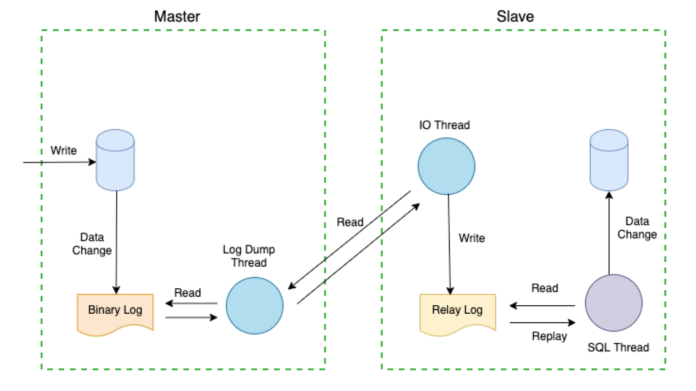
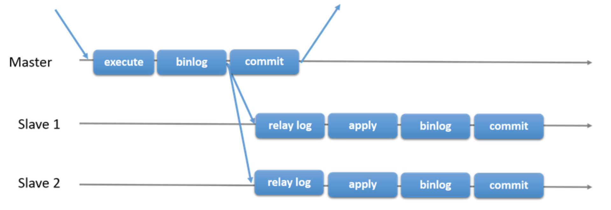
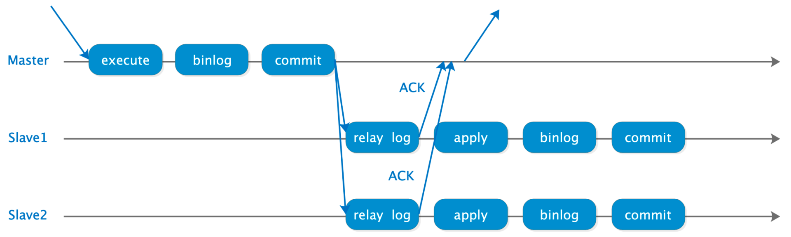
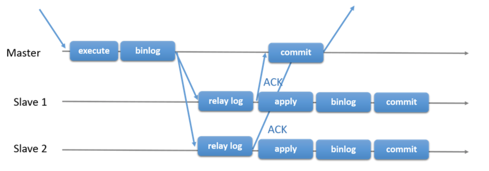
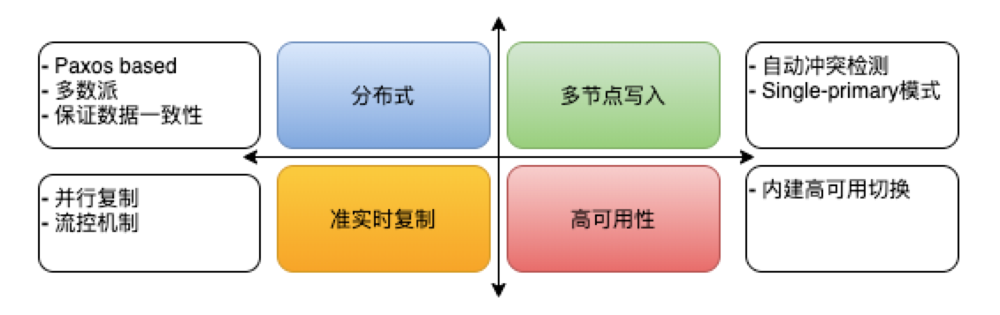
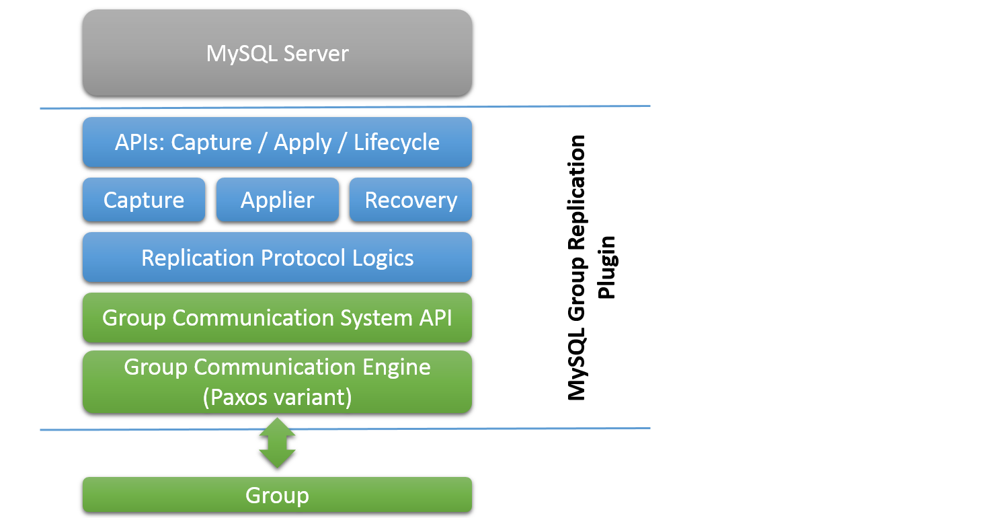
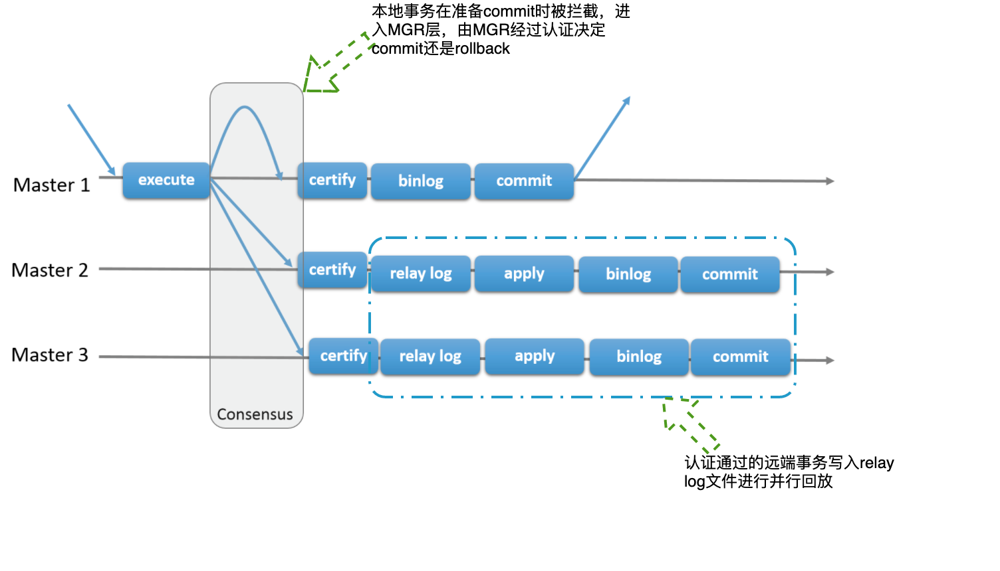

MySQL 的 MGR
MySQL 高可用架构的历史
MySQL 自带的主从复制机制，本身并不能实现自动高可用。
早期使用开源组件来搭 MySQL 集群的方案，使用 MMHA。当代 MySQL 官方自己主推的方案是 MySQL cluster。这些老的方案，优先保证MySQL服务的持续可用，在异常切换情况下，可能出现主机上部分数据未能及时同步到从库，造成主从切换后数据丢失。但是包括金融支付在内的一些业务，对于数据库服务既要求持续可用、也要求数据强一致（可以在性能上做出一些让步）。
因此，当代的 MySQL 官方提供了组复制（MySQL Group Replication）的方案，构建了新一代的 MySQL 高可用强一致服务。
Master-Slave（MS）架构高可用概述
MS架构高可用基础
高可用MySQL是依赖复制（Replication）技术实现的，复制解决的基本问题就是，让一台数据库服务器的数据同步到其它服务器上。MySQL数据库的复制有如下三个步骤。
在主库上把数据更改记录到二进制日志（Binary Log）中（这些记录被称为二进制日志事件）。
备库将主库上的日志复制到自己的中继日志（Relay Log）中。
备库读取中继日志中的事件（Event），将其回放到备库数据之上。
以上只是概述，实际上每一步都很复杂，更详细的描述了复制的细节。

MS架构高可用痛点
MS架构围绕着复制方式实现高可用，复制的痛点主要围绕着数据一致性。如果第一个节点的数据进行了更新操作并且更新成功后，却没有使得第二个节点上的数据得到相应的更新，于是在对第二个节点的数据进行读取操作时，获取的依然是老数据，这就是典型的数据不一致的问题。
在高可用数据库进行Failover时，可能数据还没有复制完毕，这样就出现了数据不一致的风险，反应在实际业务上可能是数据丢失了，或错乱了。MySQL在数据复制上进行了旷日持久的改进，由异步复制（Asynchronous Replication）到半同步复制（Semisynchronous Replication），再到增强半同步复制（Enhanced Semisynchronous Replication），几近使RPO趋于0，直至组复制（Group Replication）的出现。
异步复制
MySQL默认的复制就是异步复制，主库在执行完用户提交的事务后，将事务事件写入到Binlog文件中，这时主库只会通知Dump线程发送这些新的Binlog，然后主库就会继续处理用户的提交，而不会保证Binlog传送到任何一个备库上。
若主库发生Crash，其上已经提交的事务可能并没有传送到备库上，此时Failover，可能就会导致新主库上的数据不完整，出现了数据不一致性的问题。

半同步复制
半同步复制与异步复制不同的是，其在主库执行完用户提交的事务后，等待至少一个备库将接收到的Binlog写入Relay Log后，并返回给主库ACK，主库才会继续处理用户的提交。这里主库等待备库返回ACK的时间点，由参数rpl_semi_sync_master_wait_point=AFTER_COMMIT设置；等待几个备库返回ACK，由参数rpl_semi_sync_master_wait_for_slave_count=1设置。其中还有一个半同步超时的设置，由参数rpl_semi_sync_master_timeout=100控制，超时后半同步复制退化为异步复制。
半同步复制提高了数据的安全性，同时也会造成一定程度的延迟，该延迟至少是一个RTT（Round Trip Time）。
从这个方案起，就一定会带来一个写入抬升，很容易导致业务对时延的容忍要翻倍，业务能够逐步容忍超过 30ms -80 ms 的写入抬升（写入性能会下降超过 50%），才能逐步实现同城/异地的多活。

增强半同步复制
增强半同步复制与半同步复制的不同之处是，其等待备库返回ACK的时间点不同。在MySQL中一个Commit过程由三个步骤组成：第一，Prepare the transaction in the storage engine (InnoDB)；第二，Write the transaction to the binary logs；第三，Complete the transaction in the storage engine。增强半同步复制等待备库ACK的时间点，由参数rpl_semi_sync_master_wait_point=AFTER_SYNC配置，是在Commit的第二，和第三步骤之间。不同于半同步复制等待备库ACK的时间点，是在Commit的第三步骤之后。试想对于增强半同步复制，在主库等待备库返回ACK时发生了Crash，由于该Commit还没最终结束，用户在主库上不会看到变更。当Failover后，用户在新主库上也不会看到变更，不存在数据不一致的问题。而对于半同步复制，由于该Commit已结束，用户在主库上会看到变更。当Failover后，用户在新主库上反而看不到变更，出现了数据不一致的情况。可见增强半同步复制，比半同步复制，在保证数据一致性上又前进了一步。
证明同步写远端的部分应该总是在 commit 之前，而不是 commit 之后。这是一个简单，但不易察觉的问题。

MGR跨越
MySQL Group Replication（后简称MGR）的出现让大家眼前一亮，其建设性的以插件（Plugin）的方式添加到MySQL现有体系架构中，基于原生复制技术，使用了Binary Log，Row-based logging，和GTID等特性，使用了Paxos一致性协议的数据复制逻辑，保证了数据的一致性。

下图展示了Group Replication插件的层次体系，逐步了解下每个模块的大致作用。
APIs - Capture/Apply/Lifecycle：插件设置的一组API，用于和MySQL Server交互通信。
Capture/Applier/Recovery：插件设置的一组组件，Capture组件负责追踪事务执行时的上下文消息；Applier组件负责执行异地事务；Recovery组件管理全局恢复，如节点加入Group时，选择Donor，又或连接Donor失败重连。
Replication Protocol Logics：该模块实现了复制协议的逻辑，负责处理事务冲突检测，接收和发送事务消息到Group中。
Group Communication System（GCS）：该层属于高层API，其抽象了构建复制状态机的属性，将插件下层通信层的实现和上层进行了解耦。
Group Communication Engine（XCom）：通信引擎，Paxos协议的核心实现，负责Group中成员的通信。

组复制
下图显示了MGR与普通MySQL复制模式的区别，在MGR中提交事务时，事务在引擎层完成Prepare，写Binlog之前会被MySQL预设的钩子（Hook）before_commit拦截，进入到MGR层，其将事务执行相关的信息打包，通过Paxos一致性协议（Consensus）进行全局排序后发送给MGR各个节点，当超过半数（N/2+1）的节点（包括它自己）回应后，发送消息告诉所有节点，这个数据包同步成功。各节点独自进行认证（Certify）。若认证通过，本地节点写Binlog完成提交。异地节点写Relay Log，由建立的复制通道（Replication Channel）group_replication_applier完成事务并行回放。若认证不通过，就会进行回滚（Rollback）。
认证类似 Paxos 里面对于 proposal 的 accept，也类似 2PC 里面的 update 后的 canCommit，不然会触发回滚，是一个收集 ballot 的过程。

When a read-write transaction is ready to commit at the originating
server, the server atomically broadcasts the write values (the rows
that were changed) and the corresponding write set (the unique
identifiers of the rows that were updated). Because the transaction is
sent through an atomic broadcast, either all servers in the group
receive the transaction or none do. If they receive it, then they all
receive it in the same order with respect to other transactions that
were sent before. All servers therefore receive the same set of
transactions in the same order, and a global total order is
established for the transactions.However, there may be conflicts between transactions that execute
concurrently on different servers. Such conflicts are detected by
inspecting and comparing the write sets of two different and
concurrent transactions, in a process called certification. During
certification, conflict detection is carried out at row level: if two
concurrent transactions, that executed on different servers, update
the same row, then there is a conflict. The conflict resolution
procedure states that the transaction that was ordered first commits
on all servers, and the transaction ordered second aborts, and is
therefore rolled back on the originating server and dropped by the
other servers in the group.
当代版本的 MGR 先不支持多主模式，虽然上图支持自动冲突检测，但不支持自动冲突解决。
MGR 的写入性能最差，但读写性能非常好。